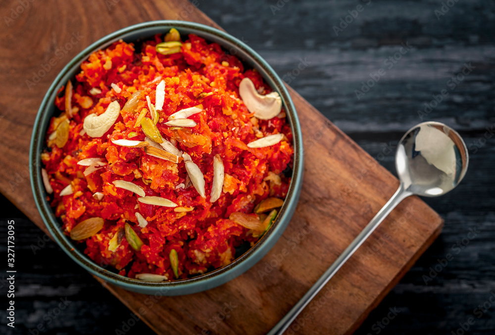

Gajar Ka Halwa (Carrot Pudding) Recipe

Description
Gajar ka Halwa, also called Gajrela, is an Indian carrot pudding that is rich, creamy, and delicious. It is made with cooking carrots with milk, sugar, and ghee. I also like to add some ground cardamom, which adds a wonderful aroma and flavor to the pudding.
Gajar ka Halwa can be enjoyed as is, or served warm with a scoop of ice cream topped with slivered pistachios. It is heavenly!
Ingredients
- Carrots: Use fresh carrots, red or orange, whichever is available.
- Dairy Products: milk - for creamy texture, Ghee/Clarified Butter
- Sugar: as a sweetener for this recipe, you can use dates and jaggery too.
- Cardamom: for perfect aroma and flavour.
- Nuts: any nuts of your choice - cashews, almonds, pistachious, and even raisins.
Steps
- Start with washing the carrots. Then, peel them using a peeler.
- Then we have to grate the carrots. You can use a hand grater or a good processor. The main thing to note is to use the thicker grate.
- Add the grated carrots to a large pan and turn the heat to medium-high. Saute the carrots for 5 minutes so that some of the moisture is removed.
- Now add the milk to the same pan and let the milk (with the carrots) come to a boil. Then, lower the heat to medium flame and let it cook.
- Cook the carrots until all the liquid is evaporated. Stir frequently, as you don’t want the halwa to scorch the bottom of the pan. This will take about 35-45 minutes.
- Now add the sugar to the halwa. The sugar will release water and make the halwa a little liquidy. Cook until the halwa becomes dry again.
- Now add the cardamom powder, and remaining ghee and mix will the carrot halwa. This gives a great final touch and taste of ghee to the Halwa. Roast for a couple of minutes for the ghee to mix into the halwa.
- Now add nuts of your choice and mix them well.
Gajar ka halwa is ready to be enjoyed!